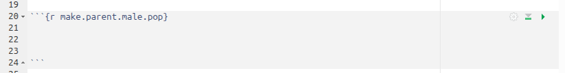
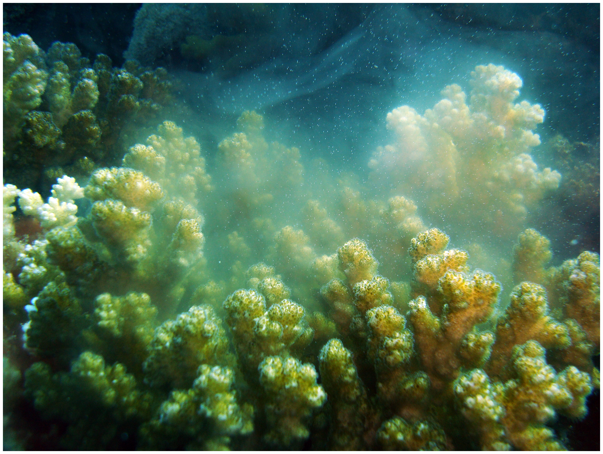

I had a student tell me he had some experience with R, and was hoping to learn more about it in Biol 365. I offered to make a version of the simulation modeling exercise that uses R instead of Excel for him, as well as for anyone who has had enough Excel, and wants to expand their R skills.
Given that, I wrote this to work for a student who knows some R already. If that isn't you, then I strongly recommend that you do the Excel version of the assignment, because these instructions will be hard to understand if you have never used R before. If you're really sick of Excel, and are up for a challenge, then you're welcome to give it a try, but expect a much steeper learning curve than if you stick with Excel.
For the final three weeks of class, you will build a simulation model of genetic drift. Genetic drift is important to evolutionary biology, plant and animal breeding, biotechnology, and biological conservation. We will focus on the conservation applications in this case, and as such we will focus on how genetic drift affects allelic diversity (which is important for a species' ability to adapt to its environment) and heterozygosity (which is important for avoiding genetic disorders, and for an individual's ability to fight off wide ranges of infectious diseases).
We will break the work down into four stages:
Initial setup of the populations, and simulation of a single run of 500 generations. This is your goal for this week.
Modification to run the simulation 100 times, collect data from each. This is the goal for next Monday.
Increase population size
Add immigration. These last two are easy, and can both be done on the last day or two of class.
You should be able to complete these four versions of the model by the end of the final day of class, on May 6th. When you've completed the simulations you will write up the results and submit your writeup and simulation models in place of a final exam for the class.
I assume that you already know something about R, but briefly... R is a an open source programming language and statistical analysis environment. "Open source" is a software development method, in which the programming code is available for anyone who wants to look at it, and allows contributions of features and bug fixes from users. Open source software development was devised by advocates of "free software", which is a movement based around the rights of users, including the right to inspect the code for the programs they use (since "free" in English can pertain either to speech or beer, free software is often called "libre software" to clarify that advocates are referring to free in the sense of freedom, not in the sense of a price equal to zero).
This openness tends to lead to a couple of nice things: first, the software is usually distributed for free, because anyone who knows how could compile the freely-available code any time they wanted to. Second, because so much is being given away for free, R users tend to be grateful, and to contribute extension "libraries" that greatly expand the capabilities of R. There are more than 10,000 user-contributed packages available, and some have been nearly indispensable (the R developers don't feel much urgency about implementing things that are readily available as contributed libraries).
These instructions assume you will be using the R Studio integrated development environment. It is on the student computer lab machines, but you can also download it to install on your own computer from here (it is also free). Follow the installation instructions, as you have to install R first.
Once you have R Studio installed, start it and make a new project for the simulation model - do this with File → New Project... ; use the "New Directory" option to make a new folder for the project and all its files. Call the project "drift_simulation" (the underscore is a good idea, as it's easier to use R when there are no spaces in names of things).
When you're done you'll see in the "Files" tab that there is a file called drift_simulation.Rproj, which is the "project file" created when you made the new project. R Studio uses this file to keep track of things like the sizes of the four panels of the R Studio window, whether you have any files open, and so forth.
By far the easiest way to use R within R Studio for class projects like this one is to write documents with R Markdown, which is a format that allows you to mix text explanations with executable "code chunks" where you can run commands. I have prepared an Rmd file for you to use for this exercise, with code chunks for all of the steps you need to complete. The file for the first two stages of the simulation is called step1_and_2_setup_and_run_n100.Rmd - download it and move it into your new project folder. When it's in the project folder you'll see it in the "Files" tab in R Studio, so click on it there to open it (DO NOT click on it in the Downloads folder and start working on it from there, you really want to have it in the project folder to avoid issues later).
A code chunk is created using a line with an opening set of characters, followed by one or more blank lines, and then another line with closing characters, like so:

The opening line is:
```{r make.parent.male.pop}
It is formed using three "back-ticks" (on the key to the left of the 1 on the keyboard) followed by curly brackets with the code word "r" inside of them, {r}. Optionally, you can add a label, which every one of the code chunks I've given you will have - this one is labeled "make.parent.male.pop", and this is how I will direct you to the right code chunk to enter the commands below. Just match the label I specify in the instructions below with the label in the brackets and everything should work fine.
If you look in the upper right corner of the code chunk, there is a "run" button, which is a right-pointing green triangle. When you have your code entered you click the "Run" button to run it.
Okay, with that very brief intro, you can get started.
The model will be general, and is not meant to model a particular species. However, we have some choices to make about how to construct the simulation that need to be guided by biological characteristics. So, in a general sense, the "species" we are simulating will have the following properties:
Diploid (meaning there are two alleles per gene, one inherited from the mother and one from the father)
Sexually reproducing
Random mating
The model will be individual-based (meaning that our model will simulate individuals in the population), and will be a simulation model (meaning that we will study the virtual individuals to understand how drift affects the gene pool rather than writing equations and finding the solutions for particular variables). Random changes in gene frequency (i.e. genetic drift) will emerge from the process of random mating between our simulated individuals, which will randomly select some individuals to produce offspring while others produce none. The fact that mates will be selected at random from the population will make the model stochastic, and each simulation run will be somewhat different from any other. Our model will thus be a stochastic individual-based simulation model.
Although we don't need to specify a particular species that our model
represents, the type of random mating we will simulate is easiest to
imagine from " 
To keep the simulation relatively simple we will only concern ourselves with a single gene with 5 different alleles. Any single individual can only have two alleles, one of which was inherited from its mother and one from its father, but different individuals in a population can have different ones - the five alleles in the population will be labeled A, B, C, D, and E.
The first thing we need to do is to establish our initial populations of individuals. We will only use two properties of each individual: sex and genotype.
We need to set up the genotypes for the parent population, which will establish the starting allele frequencies for the population's gene pool. We'll refer to these as the initial conditions, and each time we run the simulation we'll return the population to this starting point. First we'll set up the layout.
Open R Studio and start a new project. Make a new folder to keep everything nice and organized.
We will begin this population all five of the alleles (A, B, C, D, and E) at a frequency of 0.2, which means that each of the five will represent 20% of the total alleles in the population.
We can translate gene frequencies into genotype frequencies using the Hardy-Weinberg formula. Hardy-Weinberg translates allele frequencies into genotype frequencies by assuming that alleles combine at random, in proportion to their frequencies in the population. We can see how it works using a version of a Punnett square, with each parental allele in a row and column label, which then combine to form genotypes of offspring:
| A (0.2) |
B (0.2) |
C (0.2) |
D (0.2) |
E (0.2) |
|
|---|---|---|---|---|---|
| A (0.2) | AA (0.22) |
AB (0.2)(0.2) |
AC (0.2)(0.2) |
AC (0.2)(0.2) |
AE (0.2)(0.2) |
| B (0.2) | AB (0.2)(0.2) |
BB (0.22) |
BC (0.2)(0.2) |
BD (0.2)(0.2) |
BE (0.2)(0.2) |
| C (0.2) | AC (0.2)(0.2) |
BC (0.2)(0.2) |
CC (0.22) |
CD (0.2)(0.2) |
CE (0.2)(0.2) |
| D (0.2) | AD (0.2)(0.2) |
BD (0.2)(0.2) |
CD (0.2)(0.2) |
DD (0.22) |
DE (0.2)(0.2) |
| E (0.2) | AE (0.2)(0.2) |
BE (0.2)(0.2) |
CE (0.2)(0.2) |
DE (0.2)(0.2) |
EE (0.22) |
Homozygotes are produced when the same allele is contributed by each parent, which means that if the frequency of the allele is p, then the homozygous genotype should be produced at a frequency of p x p, or p2 - there is only one way in the table for each homozygous combination to occur, so p2 is the final calculation of the frequency of the genotype. Since all of the alleles have a frequency of 0.2, this means homozygotes occur at a frequency of 0.04.
You can see that the Hardy-Weinberg values result from combining all the alleles in the population with themselves, and since all of them start with the same frequency in our model the frequencies of all the combinations will all be the same at the beginning (that is, the frequency of AA, BB, CC, DD, and EE will all start at 0.04).
A heterozygote with an A from their mother and a B from their father has the same genotype as one who received a B from their mother and an A from their father, so the fact that those heterozygous pairings happen in two places in the table just means that their frequency will be pq + qp, or 2pq.
We can thus get this simple initial set of frequencies in R using a function called expand.grid() that makes every possible combination of inputs. Let's make a vector with the allele names in it first, it will come in handy in several places. In chunk make.parent.male.pop enter the command:
alleles <- c("A","B","C","D","E")
You should see that an object called alleles is now in your environment tab.
Below the alleles command, in the same chunk, you can use expand.grid() to get all the possible combinations:
data.frame(expand.grid(alleles, alleles, stringsAsFactors = F)) -> males
The expand.grid() function makes a new matrix with two columns, which contain all of the combinations of values in the two vectors. Since we used alleles twice as both vectors it produces all possible combinations of the alleles A, B, C, D, and E, including alleles with themselves. Each is placed in a different column of a data frame. The "strings.as.factors = F" argument keeps the entries in the males data frame as just characters, rather than "factors", which are a different type of data in R. If you type males at the console you'll see that you have 25 rows, and each row is a different genotype. Each homozygote occurs once, and each heterozygote occurs twice, albeit with a different order for the two (that is, A, B and B, A both appear).
We want to start with 50 males, not 25, so we can double the number of males by selecting all 25 of the males twice, and then re-assigning the full 50 of them back into the males data frame. In the same chunk, below your expand.grid() command enter:
males[rep(1:25,2),] -> males
This replaces the version of males that had 25 rows with a new version with 50. The way this is done is to use the command 1:25 to make a sequence of numbers from 1 to 25, and then to repeat it twice. By putting these numbers in the "row index" position, inside of square brackets to the right of the name of the males data set, we get all 25 rows twice. The initial male population is set.
Why not just double males?
I'll put little "asides" that are not directly part of the work flow into these gray boxes.
There are often multiple ways to do the same thing in R. Which to use is often a matter of personal preference - for example, another way to double the number of males would be to use the command:
rbind(males, males)
This works fine, so at this point it would be a perfectly good alternative to the more complicated method of entering the row numbers twice, as I had you do above.
But, the way that we did it is easier to use later in the simulation, when we want to be able to vary the size of the population. R's flexibility can make it a little harder to learn, but it gives you a wide range of ways you can work, and you can pick the method that is best for your particular needs.
The we should rename the columns to Allele1 and Allele2 for the sake of clarity. Below the command you just completed, enter the command:
names(males) <- c("Allele1","Allele2")
If you type males in the Console you'll see the columns are now renamed, and you have 50 rows.
The one thing that's still a little odd is that the row numbers go from 1 to 25, then start over at 1.1 and go to 25.1. We can fix this, and get R to revert back to a sequential row number for every row, but entering (below the names(males) command you just finished):
rownames(males) <- NULL
Now if you type males the row names are the same as the row number, from 1 to 50.
3. Making the females is much simpler, because they have the exact same initial setup as the males. In chunk make.parent.female.pop enter the command:
females <- males
This makes a second copy of the males data frame with the same initial conditions as the females.
Assignment operators
R allows you to use either arrows, -> or <-, or the equal sign, =, as assignment operators. I have a mild preference for the arrows (they're what I learned when I started using R), as they allow assignment from either left to right (->) or right to left (<-), and I like the flexibility. But, if you do use =, then it's equivalent to <-, as it assigns whatever is entered on the right into the object on the left of the equal sign.
We will want to measure relevant characteristics of the population's gene pool as the simulation progresses. There are several different things we could measure, but the primary issues we would be interested in from a conservation perspective are changes in numbers of alleles, changes in their frequencies, and changes in heterozygosity.
The count of alleles is called allelic diversity. If any allele goes to fixation that means it has reached a frequency of 1, and is the only allele left in the population. This is always the expected end result of genetic drift, given enough time, but it can take longer under some circumstances than others. We are interested in how long it takes to reach fixation, if it occurs over the number of generations of random mating that we simulate. If a single allele goes to fixation, all the others have gone to a frequency of 0 and are lost from the population. The allelic diversity is at its minimum point when this happens.
We're also concerned about heterozygosity, which is the proportion of individuals that are heterozygous for this gene. This is also an important measure from a conservation perspective, and although we know that it has to go to 0 if an allele reaches fixation (since all individuals have to be homozygous if there is only one allele in the population) it can decline to low levels before this happens. We expect the highest levels of heterozygosity when the allele frequencies are all the same, and as some alleles become more common (and others necessarily become relatively less common) heterozygosity will decline on average. It is possible for up to 100% of the individuals to be heterozygous, and random mating can cause heterozygosity to increase above what we would expect it to be, but on average we expect heterozygosity to decline as the allele frequencies move away from equal numbers.
1. First we will measure allelic diversity. This is just a matter of counting up how many different alleles are in the population. Initially we know this is 5, but it will change as the simulation progresses, so we'll use the same method to get the initial allelic diversity as we'll use at each step in the simulation later.
There are several ways to do this, but we'll do it by first combining the males and females into one data frame, and then using unlist() to convert the two columns into one big vector of alleles.
In chunk combine.and.unlist.parent enter the command:
rbind(males, females) -> parents
Then use unlist to combine the two columns for Allele1 and Allele2 into one big vector (next line, same chunk):
unlist(parents) -> parent.alleles
To count up how many alleles there are we first extract how many unique letters are in this parent.alleles vector - in the count.unique.alleles chunk:
unique(parent.alleles) -> parent.alleles.unique
Then we can count how many unique alleles there are using the length() command - in the same chunk:
length(parent.alleles.unique)
You'll see there are 5 alleles at the beginning of the simulation, as we already knew.
2. Next, we want to measure heterozygosity. We need to count up how many heterozygous males or females there are and divide by the total number of individuals.
Getting the number of heterozygotes is really simple, thanks to the fact that "logical" data is interpreted as the values 0 and 1. If you enter the command (in chunk heterozygosity):
sum(parents$Allele1 != parents$Allele2)
you should get a value of 20. This command is working by comparing the entry in column Allele1 to the entry in column Allele2 for each individual. The comparison is !=, which means "not equal to" (if we wanted homozygotes we would use Allele1 == Allele2). Every time the two alleles are different this comparison will return a TRUE, which is a logical data type that is numerically equal to a 1. If the two alleles are the same the comparison returns FALSE, which is equal to 0. Summing these TRUE and FALSE values is the same as counting how many of the alleles are different from one another.
To convert a count of how many individuals are heterozygous into a heterozygosity we just divide by the number of individuals - edit your command to be:
sum(parents$Allele1 != parents$Allele2)/nrow(parents)
This should give you a value of 0.8, which is the correct value for the initial heterozygosity.
3. Lastly, we will want to know the frequencies of all the alleles. This too is simple once we created the parent.alleles object, we just need to count up how many of each allele are present and divide by the total.
In chunk allele.frequencies enter the command:
table(parent.alleles)
If you run this you'll see a table with counts of each allele. Edit this command to divide by the total number of alleles:
table(parent.alleles)/length(parent.alleles)
You should see that all of the alleles start at a frequency of 0.2, in a table that looks like this:
A B C
D E
0.2 0.2 0.2 0.2 0.2
We have one more issue to deal with that won't become a problem until we start simulating drift over time, but if we set things up properly now it will continue to work as the frequencies change. The issue is that as alleles are lost we want their frequencies to go to 0, rather than having them disappear from the table. For example, if by the end of the simulation we have lost every allele but E we want the table to look like this:
A B C
D E
0 0 0 0 1
instead of like this:
E
1
The reason this matters is that we'll be appending the frequencies on to a results table, and for this to work well we need to have something in every column of the table every time, even if it's a 0. We can make this work, but first we have to convert parent.alleles into a "factor", which is a type of variable in R that has "levels". If we specify the levels when we convert to a factor it will keep all of them and count a 0 if it doesn't occur in the parent.alleles. Convert the command to:
table(factor(parent.alleles, levels = alleles))/length(parent.alleles)
Since we already made a list of alleles we can use it to specify the levels in our factor() command. We aren't assigning this factor() output to anything, so the only place the parent.alleles will be treated as a factor is in this one command, without affecting any other (even the length(parent.alleles) part of this command is using the un-converted version of parent.alleles).
Again, it won't be an issue yet, but if we convert this output to a matrix it will make appending this output to the results easier - edit the command to read:
as.matrix(table(factor(parent_alleles, levels=alleles))/length(parent.alleles))
This is going to pay dividends later, even if the complexity doesn't seem warranted yet.
1. Now that we have frequencies of all the alleles, heterozygosity, and allelic diversity calculated for this initial generation, we need to set up a place to record all of this information as each generation passes. We can make a blank data frame called "results" by making a new data frame with a column for each piece of information we want to record, initialized to hold the numeric data that will go into it, but with nothing entered yet. In chunk make.results.data.frame enter:
data.frame(F.A = numeric(0), F.B = numeric(0), F.C = numeric(0), F.D = numeric(0), F.E = numeric(0), Heterozygosity = numeric(0), Allelic.diversity = numeric(0)) -> results
This will put a data frame called results in your environment, that shows as having 0 observations of 7 variables.
2. Next, we should add the initial conditions to this data frame. We'll need to go back and edit each of our commands to assign each result into an object, then we'll be able to assemble them into a row of output and append them to the results table.
Go back to count.unique.alleles and edit the command to read:
length(parent.alleles.unique) -> allelic
Next, go to the heterozygosity chunk and edit it to read:
sum(parents$Allele1 != parents$Allele2)/nrow(parents) -> hz
Lastly, go to allele.frequencies and change it to:
as.matrix(table(factor(parent.alleles, levels = alleles))/length(parent.alleles)) -> freqs
Now to assemble these bits of output into something that can be appended to the results table we just need to put them into a vector together, in the order they appear in the results table. In chunk bundle.output enter the command:
data.frame(t(freqs), hz, allelic)
If you run this you'll see you get a row of the values you've calculated, in the same order they appear in the results table. The t() command we're applying to the freqs means "transpose", and it converted the column of frequencies into a row, which is what we needed here (this is the payoff for using a matrix as the output for the frequencies calculation).
Edit the command to assign into an object called initial.output (just like you did for the others, assignment operator and then name of the new object - give it a try).
Before we can append initial.output to results it needs to have the same column names. As long as we're certain that the initial.output values are in the same order as the results table, the simplest way to do this is to take the names from results and assign them as names to initial.output. In the bundle.output command, after the command that creates initial.output, enter:
names(initial.output) <- names(results)
This works because the names() function can both report the names of an object, and can accept input to change the names of an object. We are getting the names of results, and then assigning them as the names for initial.output.
Finally, we're ready to append the output to results - in chunk add.initial.to.results enter:
rbind(results, initial.output) -> results
The rbind() function appends the second data frame (initial.output) to the first (results). Putting initial.output second causes the intial output to be appended - that it, it's added to the bottom of the results. Since there's nothing it results it doesn't really matter, but if we had reversed the order then initial.output would be added to the top of the results table (prepending, instead of appending) - since we're going to start simulating change over time we'll want to append each generation's output to the end of the file, and we'll want to put results first each time.
The steps in simulating reproduction will be:
1. To randomly select the parents, we just need to generate random row numbers and select the parents with those numbers to be the breeders.
In chunk select.breeders enter the command:
males[sample(1:50, 100, replace = T),] -> male.breeders
The square brackets next to males are used to indicate rows and columns (that is, the square brackets indicate males[rows, columns]). In the rows position we're selecting 100 random numbers between 1 and 50, and by using "replace = T" we're able to get the same number more than once - this will mean that some males breed more than once, and some don't breed at all. The column index position is left blank (notice the comma with nothing after it before the closing bracket), which means that all columns are being included for the selected rows.
We're going to produce 50 male and 50 female offspring each generation, but we're selecting the fathers for them with this one command by selecting 100 male breeders.
Do the same thing for females parents - assign into an object called female.breeders.
2. We will treat corresponding rows in male.breeders and female.breeders to be the parents of the 100 offspring we're going to produce. To make the offspring we just need to simulate production of gametes (sperm and egg) and fertilization, which means we randomly select one of the two alleles from each parent (gametes), then combine them to be the offspring's genes (fertilization).
As a convenience, we'll assign the father's genes to be Allele1 for the offspring, and the mother's to be Allele2. Chromosomes aren't really ordered, so there isn't really a "first" and "second" chromosome, but it doesn't affect the results to do it this way and it's much simpler.
To get the first allele from the male.breeders, use (in chunk make.offspring):
apply(male.breeders, 1, function(x) sample(x,1)) -> offspring.a1
This time we're sampling a single column number at random, one row at a time. The apply() function is good for this, because it lets us run through every row in the male.breeders and do something to each one. This is very much like a loop that gets applied to each row or column of a data set.
The first argument for the apply() function is the data set name, male.breeders, and the 1 as the second argument is the code for "rows" rather than "columns" - using 1 gets the function applied to every row, in other words. The third argument is the function to apply, and we define our own with function(x), followed by what the function will be. Each row is assigned to x, one at a time, and then we use sample on it to select one of the two alleles. The output is then assigned to the object offspring.a1.
Do the same thing to select the allele from the female breeders, and assign it into offspring.a2 (put this just below the a1 line).
Once you have the two alleles, you can make the offspring by putting them together as columns in their own data frame. We'll consider the first 50 rows to be the males and the second 50 to be the females - we select the male offspring like so (same chunk, below the female.breeders line):
data.frame(Allele1 = offspring.a1[1:50], Allele2 = offspring.a2[1:50]) -> male.offspring
You now have a set of randomly generated male offspring. Do this again, but this time select rows 51 to 100 from offspring.a1 and offspring.a2 to produce the female.offspring.
5. The last step for each generation of the simulation will be for the offspring to replace the parents. This is pretty simple - in offspring.mature.to.adults enter the lines:
males <- male.offspring
females <- female.offspring
This replaces the males and females with this generation's offspring, to simulate the new generation maturing and replacing the previous one.
We are getting the same problem we had before with the row names, so let's re-set them - in the same code chunk enter:
row.names(males) <- NULL
row.names(females) <- NULL
Now we have all the steps, we just need to repeat them 500 times to simulate 500 generations of genetic drift.
Save your work!
R supports loops, which make it easy to repeat a series of steps as many times as you need to. We have all the commands we need, but we'll want to assemble them into one chunk to make it easy to run the simulation with one click of the "Run" button. The reasoning goes as follows:
To set up the initial conditions, in code chunk "loop" enter the commands (by copying/pasting them from the code chunks you originally entered them):
alleles <- c("A","B","C","D","E")
data.frame(expand.grid(alleles, alleles, stringsAsFactors = F)) ->
males
males[rep(1:25,2),] -> males
names(males) <- c("Allele1","Allele2")
row.names(males) <- NULL
females <- males
Now we write the loop. In R, a loop that runs through a series of steps a fixed, specified number of times is done with the for() function. To run for 500 generations we use the command (enter in the loop chunk below the setup steps you just entered):
for(i in 1:500)
This will run through the numbers 1 to 500, and each time through i will get set to the current iteration we're working on (that is, the first time through i = 1, the second time through i = 2, and so on up to i = 500).
The steps that will be executed in the loop should be enclosed with {} brackets. The opening bracket should be on the same line as the for() function, and but the closing one can be many lines below with the commands that will be run through each time falling between the opening and closing brackets. Assemble the commands like so:
for(i in 1:500) {
rbind(males, females) -> parents
unlist(parents) -> parent.alleles
unique(parent.alleles) -> parent.alleles.unique
length(parent.alleles.unique) -> allelic
sum(parents$Allele1 != parents$Allele2)/nrow(parents) -> hz
as.matrix(table(factor(parent.alleles, levels =
c("A","B","C","D","E")))/length(parent.alleles)) -> freqs
data.frame(t(freqs), hz, allelic) -> current.output
names(current.output) <- names(results)
rbind(results, current.output) -> results
males[sample(1:50, 100, replace = T),] -> male.breeders
females[sample(1:50, 100, replace = T), ] -> female.breeders
male.breeders[, sample(1:2,1)] -> offspring.a1
female.breeders[, sample(1:2,1)] -> offspring.a2
data.frame(Allele1 = offspring.a1[1:50], Allele2 =
offspring.a2[1:50]) -> male.offspring
data.frame(Allele1 = offspring.a1[51:100], Allele2 =
offspring.a2[51:100]) -> female.offspring
males <- male.offspring
females <- female.offspring
row.names(males) <- NULL
row.names(females) <- NULL
}
Note the open and close brackets. Each of the commands that fall between them are commands you already entered, so you can copy/paste them between into their proper place here. Many commands use output from previous ones, so the order matters - make sure the commands are all included, and that they are in the right order.
Now when you run the code chunk the initial conditions get set up, and the simulation is run for 500 generations. Go ahead and do that now.
If you then click on the "results" file name in the Environment tab it
will open up to show you have allele frequencies, heterozygosity, and
allelic diversity changed over the 500 generations of your simulation.
A good way to explore a simulation like this is to graph the results over generations. Making graphs in R can be done in several different ways, but I'm partial to the ggplot2 library. Install it if you don't already have it (you can install it from the Packages tab).
To graph the allele frequencies, in the allele.freq.graph chunk, enter the command:
library(ggplot2)
This loads the ggplot2 library so that the commands it contains can be used. You only need to do this once, before the first time you use a ggplot() command.
The actual graphing command is actually built in stages. We'll start by identifying the data set that the results are in, and set the x-axis generation numbers to use (same chunk, below the library() command):
ggplot(results, aes(x = 1:500))
If you run this you won't see much, as all we've done is to identify the values to use for the x-axis. There are columns in results for the frequencies of each of the alleles, so we'll need to add a line for each one. We add data to a ggplot() graph using a geom, which is a function that identifies a "geometric object" that represents the data. We want lines, so we'll sue geom_line(). Modify your ggplot() command like so:
ggplot(results, aes(x = 1:500)) + geom_line(aes(y = F.A, color = "F.A"))
The aes() statement is usually used to refer to "aesthetic mappings", which are roles for columns in the results data set to play in the graph. For the line, we use the frequency of A as the y-axis value. We also set the color, which because it is inside of the aes() will also be used in the legend so that the color-coded lines are interpretable.
We need to add a line for each of the five alleles, like so:
ggplot(results, aes(x = 1:500)) + geom_line(aes(y = F.A, color = "F.A")) + geom_line(aes(y = F.B, color = "F.B")) + geom_line(aes(y=F.C, color = "F.C")) + geom_line(aes(y=F.D, color="F.D")) + geom_line(aes(y=F.E, color = "F.E"))
This is nearly what we want, it places all five lines on the graph color coded by allele, but the x- and y-axis labels aren't good. To change the labels add a labs() argument:
ggplot(results, aes(x = 1:500)) + geom_line(aes(y = F.A, color = "F.A")) + geom_line(aes(y = F.B, color = "F.B")) + geom_line(aes(y=F.C, color = "F.C")) + geom_line(aes(y=F.D, color="F.D")) + geom_line(aes(y=F.E, color = "F.E")) + labs(x = "Generation", y = "Allele frequency")
The labels now are Generation for the x-axis, and Allele frequency for the y-axis. Everyone's results will be different, but you almost certainly had one allele go to fixation, which means that it was the only allele left. Small population sizes tend to lose all but one of their alleles quickly, and only once in a great while will you get more than one allele all the way to the 500th generation.
Go ahead and make a graph for heterozygosity, and another for allelic diversity. Since you'll only have one line on each graph for those you can simplify your ggplot() command considerably - for heterozygosity you can use (chunk hz.graph):
ggplot(results, aes(x = 1:500, y = Heterozygosity)) + geom_line() + labs(x = "Generation", y = "Heterozygosity")
I moved the y = statement into the aes() statement of the first ggplot() command because there's only one line. We don't need a separate geom_line() for each column of allele frequencies, with their own colors, so we can combine the x = and y = into a single aes(). Since we put the y = Heterozygosity command inside of the first aes() we don't need it in geom_line() anymore - it will use the x and y variables we identified in the ggplot() command, and draw the line from them.
The only other change is that we needed to change the y-axis label to "Heterozygosity".
You can make one last graph for allelic diversity, using this as your template - enter it in the allelic.graph chunk, and make sure to change the y = to Allelic.diversity, and the y-axis label to Allelic diversity as well.
You can re-run the command by hitting the run button on the loop code chunk, and then re-graph the results each time to see how different runs produce different output. Since drift is a random sampling process you'll pretty consistently get an allele go to fixation, but how long it takes and which of the five it will be is unpredictable.
Stage 1 complete!
Congratulations! You're done with the first model, which simulates a single run of 500 generations - this is the hard part, the rest of the models are modifications of this initial one (some very minor modifications at that).
Time to move on to the next model, which will repeat this process 100 times.
We can learn a lot about how the process of genetic drift works by looking at the results from a single run of 500 generations - you can see the unpredictability of changes in frequency over time, for example. Some of you may even have a case in which an allele drops to low frequency and then goes on to increase to fixation - those sorts of reversals of fortune can happen when the results are random.
If you ran the simulation a few times, though, you'll see that the patterns are different each time you run the simulation, and there is a good chance that you'll see a different allele go to fixation each time. Since there isn't any selective advantage to any of the alleles we'd expect that each one would be equally likely to go to fixation, and that over many runs the number of times each one does go to fixation should be equal.
The implication of this unpredictability is that we can't rely on a single run to tell us what to expect, because the answer we get will depend on which run we look at.
We know, however, that random outcomes (like tossing coins or rolling dice) can be completely unpredictable at the level of a single trial, but become highly predictable at the level of multiple trials. A single coin toss will either land Heads or Tails, and we can't predict in advance which it will be, but if we toss the coin 100 times we can expect to get about 50 Heads and 50 Tails.
Similarly, if we run the simulation 100 times we can see what typically happens, so that we don't have to rely on a single run - the average time to fixation across 100 runs will be a better predictor of the expected effects of drift than any single run could be. We will also get a fuller set of possible outcomes to look at, and we may find that some runs go to fixation vary quickly while others don't go to fixation at all - we can use the full set of runs to tell us what is typical, and what the range of possibilities are.
1. Given this, we need to modify our program so that it will run the simulation repeatedly and record results from each run.
This turns out to be super easy to do in R. The apply family of functions are designed to repeatedly do the same thing to a batch of inputs, and collect the results for all of them. The version that collects each run into a named element of an R list is called lapply().
At least, it becomes really easy to do if we turn our single run of the simulation code into an R function. In chunk simulation.run.function, copy the code from the loop chunk and paste it.
Then, add at the beginning:
run.sim <- function() {
This defines the function, and assigns it to an object in the environment called run.sim. The open bracket starts the function code, which will include all the steps we used to simulate drift in the loop chunk.
To finish, we need to go down below the end of the for() loop, and enter:
return(results)
}
Each run of the function runs one of our simulation models, and builds a results object with the allele frequencies, heterozygosities, and allelic diversities. Using return(reults) returns this results data frame as the output from one run of our function.
The complete code will look like this (note that the only edits you need to make are at the very top and very bottom of the code you copied/pasted from loop):
run.sim <- function() {
alleles <- c("A","B","C","D","E")
data.frame(expand.grid(alleles, alleles, stringsAsFactors = F))
-> males
males[rep(1:25,2),] -> males
names(males) <- c("Allele1","Allele2")
row.names(males) <- NULL
males -> females
data.frame(F.A = numeric(0), F.B = numeric(0), F.C = numeric(0),
F.D = numeric(0), F.E = numeric(0), Heterozygosity = numeric(0),
Allelic.diversity = numeric(0)) -> results
for(i in 1:500) {
rbind(males, females) -> parents
unlist(parents) -> parent.alleles
unique(parent.alleles) -> parent.alleles.unique
length(parent.alleles.unique) -> allelic
sum(parents$Allele1 != parents$Allele2)/nrow(parents)
-> hz
as.matrix(table(factor(parent.alleles, levels =
c("A","B","C","D","E")))/length(parent.alleles)) -> freqs
data.frame(t(freqs), hz, allelic) ->
current.output
names(current.output) <- names(results)
rbind(results, current.output) -> results
males[sample(1:50, 100, replace = T),] ->
male.breeders
females[sample(1:50, 100, replace = T), ] ->
female.breeders
male.breeders[, sample(1:2,1)] -> offspring.a1
female.breeders[, sample(1:2,1)] -> offspring.a2
data.frame(Allele1 = offspring.a1[1:50], Allele2 =
offspring.a2[1:50]) -> male.offspring
data.frame(Allele1 = offspring.a1[51:100], Allele2 =
offspring.a2[51:100]) -> female.offspring
males <- male.offspring
females <- female.offspring
row.names(males) <- NULL
row.names(females) <- NULL
}
return(results)
}
To now run this command 100 times, and collect the output, go to chunk lapply.repeat.100.times and enter:
lapply(1:100, FUN = function(x) run.sim()) -> sim.output
An lapply() function takes as arguments:
Each repetition of our run.sim() command will produce a results data frame, and each one will be collected by lapply() and returned as a list of all 100 of them. This is what is assigned to sim.output.
Go ahead and run the command, and wait patiently as it repeats the simulation 100 times (it will require a lot less patience than if you were doing this in Excel, but still).
2. Once you have it, though, you still don't have the information we want, namely the generation that an allele went to fixation, and which allele it was. We can get this with another version of the apply function, sapply(), using sim.output as the input.
First, we want to know the generation at which an allele went to fixation. When fixation happens allelic diversity goes to 1, so this is equivalent to asking which is the first row of the results table that has a 1 as the allelic diversity.
In the chunk sapply.to.get.fixation.gen enter the code:
sapply(sim.output, FUN = function(x) min(which(x$Allelic.diversity == 1))) -> gen.fixed
The only difference between sapply() and lapply() is what the command returns. The lapply() command returned a list, but sapply() returns a vector or a matrix - we have just one set of numbers, so we'll get a vector of them in gen.fixed.
We'll use the same approach in chunk sapply.to.get.allele.fixed, but the command is a little trickier. Enter the command:
sapply(sim.output, FUN = function(x) alleles[x[500,c("F.A", "F.B", "F.C", "F.D", "F.E")] == 1]) -> allele.fixed
We're still working with the sim.output list, as before. This time we're using x in the function, and sapply() takes each one of the simulation results one at a time and assigns it to the variable name x, and passes it to the function we define in the FUN statement. So, each time through x is one of the results data frames.
The part of the command that's finding which column went to fixation is x[500,c("F.A","F.B","F.C","F.D","F.E")] == 1. This part of the command is taking the final, 500th row of the results data and checking which of the five frequency columns have a frequency of 1, if any. If the allele has gone to fixation its value will be TRUE. If we just used this command alone on the results data frame we made running the simulation just one time, we would use the command:
results[500, c("F.A","F.B","F.C","F.D","F.E")] == 1
and would get the output:
F.A
F.B F.C F.D F.E
500 FALSE FALSE FALSE FALSE TRUE
We can use these five TRUE and FALSE values to select the one allele that went to fixation, from the alleles vector. For example, if we wrote:
alleles[c(FALSE, FALSE, FALSE, FALSE, TRUE)]
the only allele that would be returned is the last one, which is allele E. Putting these together, alleles[x[500,c("F.A","F.B","F.C","F.D","F.E")] == 1] identifies which of the alleles has a frequency of 1, and uses the TRUE that is returned to select it from the vector of alleles. This gets output to the allele.fixed object for all 100 of the runs.
Finally, in chunk fixation.data enter:
data.frame(gen.fixed, allele.fixed) -> fixation.data.n100
This makes a data frame with a column for gen.fixed and another for allele.fixed. If you click on it to open it you'll see that an allele always (or at least nearly always) goes to fixation with just 50 males and 50 females, but that which allele goes to fixation is unpredictable.
To get some statistics summarizing your results you can do the following (in chunk fixation.stats):
mean(fixation.data.n100$gen.fixed)
table(fixation.data.n100$allele.fixed)
This will give you a mean for the generation fixed, and a table of how often each allele went to fixation.
3. Graphing the results is a little different than before. Now we don't have a change over time, but instead have a collection of final values from 100 runs and we want to see their distribution. A good choice for the generation of fixation results would be a boxplot.
In the chunk gen.fixed.boxplot enter the code:
ggplot(fixation.data.n100, aes(y = gen.fixed)) + geom_boxplot()
You should see that a lot of the fixation times are pretty fast, with the median (the middle of the box in the boxplot) probably falling below 100 generations. The upper tail is pretty long though, and you'll probably see some big numbers, possibly several hundred generations long.
The x-axis is a little weird, as it has numbers that don't mean anything, but let's ignore that for now. We'll put all the variations on the model that we end up doing on a single graph at the end, and the x-axis will label the models then. We'll tolerate the odd labeling for now.
Congratulations! Save your first two files someplace safe, you're going to make modifications of this basic model for the next two steps.